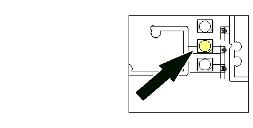

Gelb 1 ist dauerhaft an: Schlupftürkontakt oder Schlaffseilkontakt fehlerhaft.

Ursache | Abhilfe |
Die Schlupftür ist nicht richtig geschlossen. |
→ Prüfen Sie, ob die Schlupftür richtig schließt. → Prüfen Sie die Scharniere der Schlupftür und richten Sie diese neu aus. Justieren Sie den Obertürschließer. |
Abstand oder Ausrichtung zwischen Schalter und Magnet sind fehlerhaft. |
→ Prüfen Sie, ob der Schaltabstand zu groß ist. → Justieren Sie den Schaltabstand auf mehr als 4 mm. | → Prüfen Sie, ob die Ausrichtung fehlerhaft ist. → → Richten Sie Schalter und Magnet aus. |
Die Übergangs-widerstände in den Klemmverbindungen sind zu hoch. |
→ Prüfen Sie Spiralkabel und Tordosen → Tauschen Sie Bauteile bei Beschädigung oder Defekt aus. |
DIP-Schalter in der Tordose falsch eingestellt. |
→ Kontrollieren Sie die Schalterstellung aller DIP-Schalter. Beachten Sie die Anleitung der Tordosen. → Ändern Sie gegebenenfalls die Schalterstellung des DIP-Schalters. Beachten Sie die Anleitung. |
Die Steuerspannung ist zu niedrig. |
→ Prüfen Sie, ob eine Überlast durch externe Verbraucher vorliegt. → Die gemessene Steuerspannung muss > 23 V sein. Klemmen Sie externe Verbraucher ab, die eine Überlast erzeugen. |
Leitungsquerschluss im Spiralkabel. |
→ Prüfen Sie Spiralkabel und Tordosen. → Tauschen Sie Bauteile bei Beschädigung oder Defekt aus. |
Leitungsquerschluss in der Verbindungsleitung. |
→ Prüfen Sie die Verbindungsleitung. → Tauschen Sie Bauteile bei Beschädigung oder Defekt aus. |
Leitungsquerschluss in den Anschlussleitungen von Schalffseil und Schlüpftür. |
→ Prüfen Sie die Anschlussleitungen. → Tauschen Sie Bauteile bei Beschädigung oder Defekt aus. |